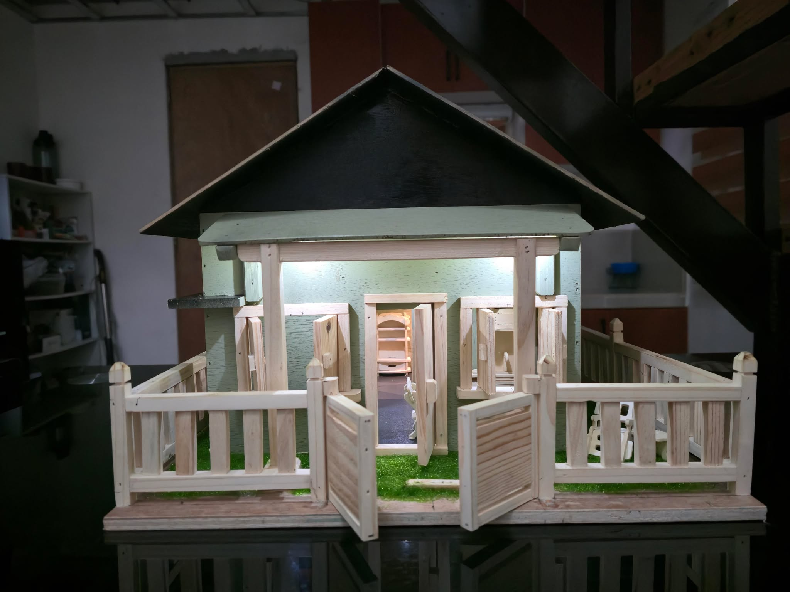
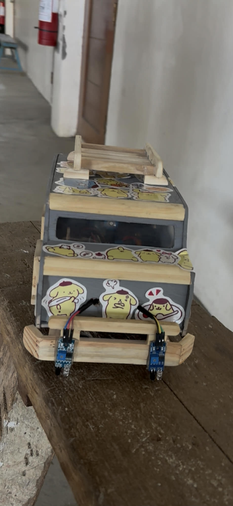

GREAD is powered by a 220V voltage outlet, the power would then start the power supply, the oven, and the brain of the machine, the Arduino Uno. The Arduino Uno contained the coding and is responsible for the actions of the fans, LED modules, LCD, and more. The oven produced heat from its heating element. The DHT22 sensor measured the temperature and humidity inside the oven, the LCD would then indicate what temperature and humidity the DHT22 sensor is sensing. The intake fan continuously blows air inside the machine as it is responsible for the air to flow within, and the Arduino Uno also signals the exhaust fan to open through the 2-channel relay 5V when the inside of the oven reaches a certain temperature to regulate the temperature and humidity.
This thesis project focuses on the development of a Smart Flood Monitoring System designed to support flood-prone communities, specifically Barangay Frances in Calumpit, Bulacan. The system aims to enhance disaster preparedness and response by providing timely and reliable early warnings through audio, visual, and IoT-based notifications. In addition, the system continuously monitors and records key environmental data, including temperature, humidity, and water level height. These real-time data are accessible through a dedicated web platform, allowing both residents and authorities to make informed decisions during potential flooding events.

Miniature House with Light Wiring
This is the miniature house we built out of wood, complete with a small fence, working gates, and a layer of artificial grass to make it look more realistic. We installed LED lights throughout the house and neatly concealed the wiring inside the structure. At the back, we added individual switches so each light can be turned on and off whenever we need. The whole model is handmade, and the lighting system makes it feel more detailed and functional.

Arduino Line Follower Car
This miniature car is something we built from scratch using mostly wood. We shaped the body, added window openings, and mounted a small wooden rack on the roof to give it more character. Inside, we installed the motors and wiring so the car can run, hiding the components as neatly as possible. The wheels are attached to a custom wooden frame, making the whole build stable and functional.